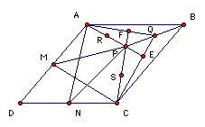

ABCD is parallelogram and P a point inside, such that the midpoint of AD is equidistant from P and C, and the midpoint of CD is equidistant from P and A. Let Q be the midpoint of PB. Show that ∠PAQ = ∠PCQ.
Solution

Let M, N be the midpoints of AD, CD respectively, and let R, S be the midpoints of AP, CP respectively. Since Q, R are the midpoints of PB, PA, we have QR parallel to AB and half its length. Hence QR = CN and is parallel to it. So QRNC is a parallelogram. Hence NR is parallel to CQ. But NR is perpendicular to AP (because NA = NP), so CQ is perpendicular to AP. Suppose they meet at E, so that ∠PEC = 90o.
Similarly, QS is equal and parallel to AM, so AMSQ is a parallelogram, so AQ is parallel to MS and hence perpendicular to CP. Suppose they meet at F, so that ∠AFP = 90o.
But now triangles AFP and CEP are similar, so ∠PAF = ∠PCE, as required.
Thanks to Bekjan Jumabaev

© John Scholes
jscholes@kalva.demon.co.uk
31 December 2003
Last corrected/updated 31 Dec 03